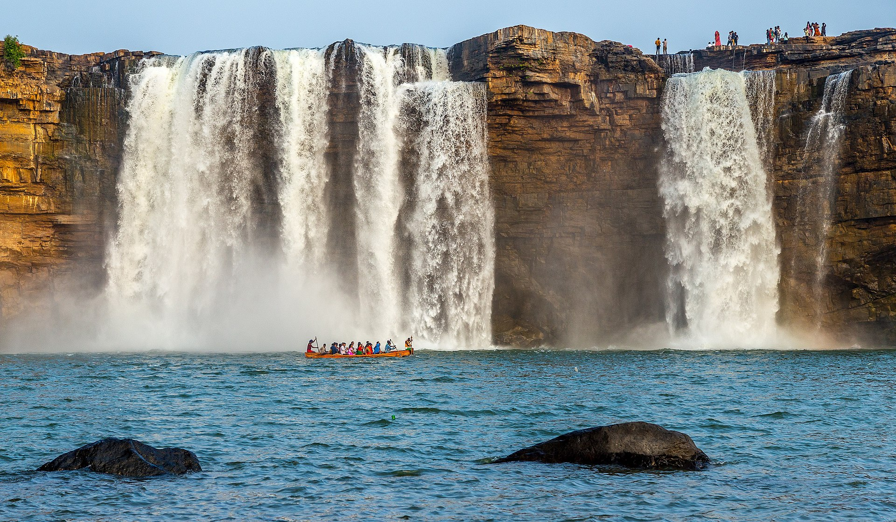
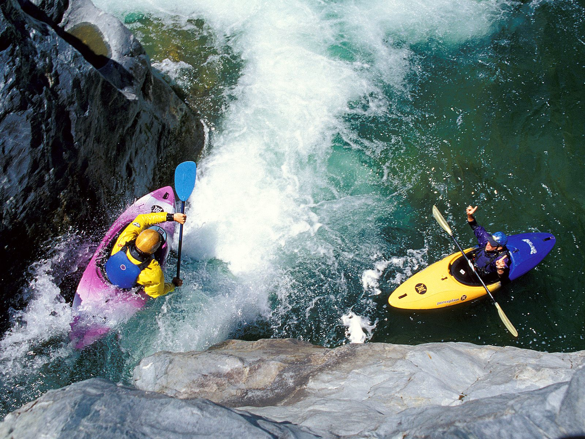

The Taj Mahal is considered to be the greatest architectural achievement in the whole range of Indo-Islamic architecture. Its recognised architectonic beauty has a rhythmic combination of solids and voids, concave and convex and light shadow; such as arches and domes further increases the aesthetic aspect. Not a piece of architecture, as other buildings are, but the proud passions of an emperor’s love wrought in living stones.

The Chitrakote Falls (also spelled Chitrakote, Chitrakot, and Chitrakoot) is a natural waterfall on the Indravati River, located approximately 38 kilometres (24 mi) to the west of Jagdalpur, in Bastar district in the Indian state of Chhattisgarh.

The indian gate, also known as is also one of the famous place in india located in the city of delhi,laknow India. There are many places to visit ind delhi.

Showerhead_Falls waterfall located in india in lambasingi it is the on of the most popular place in india . it was located in AP